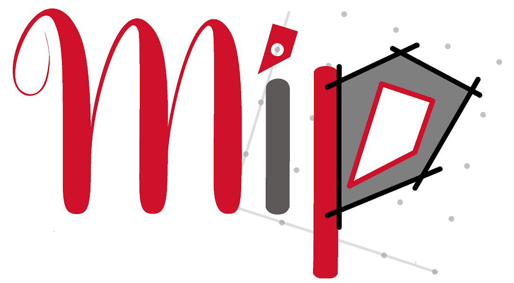

A virtual seminar series from the
Mixed Integer Programming Society
Logo-Design by ©Julia Silbermann (Font-Credits: Cornerstone, by Zac Freeland). Website hosted at GitHub Pages, layout based on skeleton using Raleway font